月案を書く
1か月のねらいと保育の内容を書きます。0〜2歳は園児ごとの欄、3〜5歳はクラス全体の欄を使います。
写真は架空のクラスの画面です。押すと大きく見られます。
1書きたい月を開く
「指導計画」の「自園の帳票」で「月案」を押します。カレンダーの「クラス」「年齢」「年度」を選び、「表示」を押します。
書きたい月の「自園の帳票で作成」を押します。その月の帳票があるときは「自園の帳票を開く」を押します。
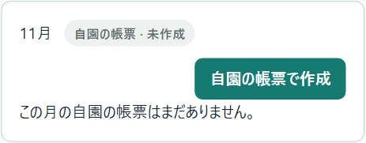
2クラスのねらいを書く
帳票の上でクラス・対象月・年齢クラスを確かめます。表の「ねらい」の白い欄を押し、今月大切にしたいことを書きます。
「家庭との連携」にはご家庭と一緒に取り組みたいことを、「評価・反省」には振り返って気づいたことを書けます。
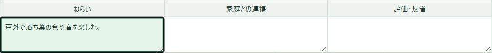
30〜2歳は、お子さんの名前を確かめて書く
「入力する園児」で名前を選び、表でそのお子さんの行を見ます。「生活・健康」「あそび」など、書きたい欄を押して入力します。
文例を使うときは、書きたい欄を先に押します。「過去の原文」に出た文章を押すと、その欄に入ります。お子さんに合う言葉に直して使えます。
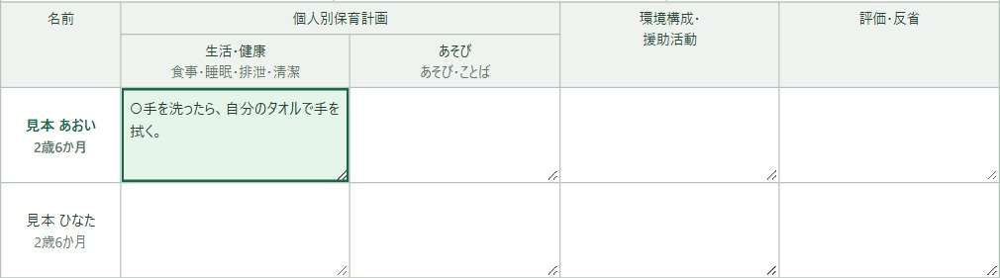
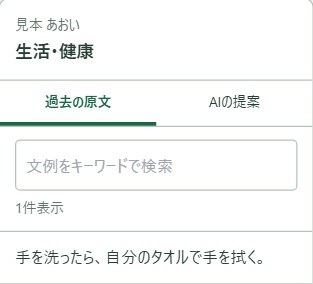
43〜5歳は、クラス全体の計画を書く
「養護」「教育」の表で、書きたい行と欄を選びます。活動のねらいや準備する環境などを、欄に直接書きます。「行事・活動」は該当する日の欄に書けます。
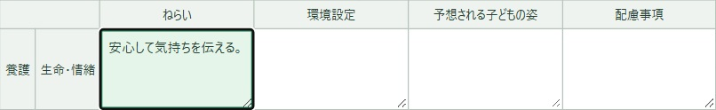
5保存して、同じ月を開く
担任名を確かめます。書きかけの計画も「下書きを保存」で残せます。担任名が空の場合は、ボタンの近くに出る「担任名を入力してください」を押して記入し、もう一度保存します。
画面上の「下書きを保存」を押し、保存のメッセージを確かめます。別の日に続きを書くときは、カレンダーで同じクラス・年齢・月を選び、「自園の帳票を開く」を押します。
「同じ欄の変更を確認」と出たら、ほかの職員もその欄を保存しています。2つの文章を読み、残す内容を選んで「選んだ内容で保存する」を押します。
6書いた月案をレビュー依頼する
月案を確認してもらうときは、「下書きを保存」の右にある「レビュー依頼」を押します。依頼すると、今の入力が保存され、文書の詳細画面が開きます。「レビュー待ち」と出れば依頼できています。
依頼前に、担任名と次の計画欄を埋めます。
- 共通：「ねらい」「家庭との連携」
- 0〜2歳：全ページの全園児の「生活・健康」「あそび」「環境構成・援助活動」
- 3〜5歳：「生命・情緒」「健康」「人間関係」「環境」「言葉」「表現」の各行の「ねらい」「環境設定」「予想される子どもの姿」「配慮事項」と、「食育」
「評価・反省」と「行事・活動」は空欄でも依頼できます。「未記入」と出たときは、次の手順で該当欄を直します。
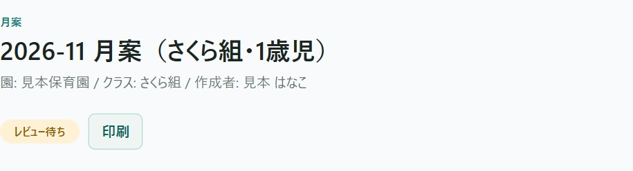
エラーが出たときは、保存できたか、レビュー依頼までできたかをメッセージで確かめます。保存に失敗した場合は入力を残して直し、保存済みで依頼だけ失敗した場合は、状態を確かめて再度「レビュー依頼」を押します。
7「未記入」と出た欄を直す
ボタンの近くに、未記入の件数と欄の名前が出ます。下線のある名前を押すと、その入力欄へ移動します。別ページのお子さんも、該当する帳票ページが開きます。
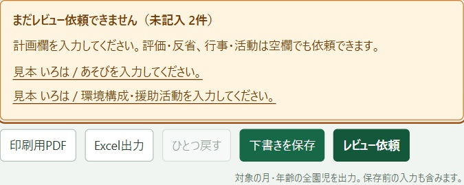
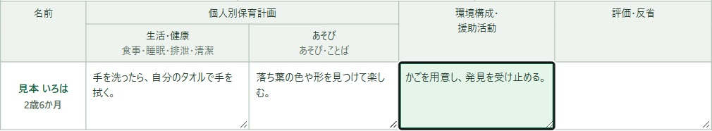
書くと未記入の件数が減ります。「入力がそろいました」と出たら、内容を確かめて、もう一度「レビュー依頼」を押します。
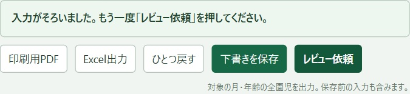
8レビュー待ちの月案を直す
「レビュー待ち」の間は本文を編集できません。承認前に直すときは、文書の詳細画面で「レビューを取り下げる」を押します。「下書き」に戻ったことを確かめ、月案を開いて直します。修正後は、もう一度レビュー依頼します。
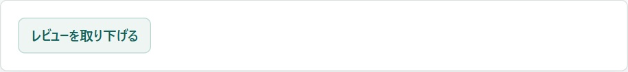
9月案を印刷する・ファイルにする
帳票の上で「印刷用PDF」を押すと、別のタブに「月案の印刷確認」が開きます。画面に出た月とクラスを確かめます。「この帳票を印刷」を押すと印刷できます。ファイルで残したいときは「PDFをダウンロード」を押します。
Excelで使うときは、元の月案で「Excel出力」を押します。
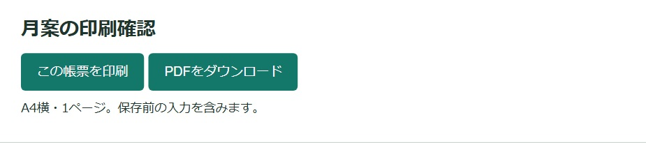
編集中の画面から出力すると、保存前の入力も含まれます。月案に残すには「下書きを保存」を押します。